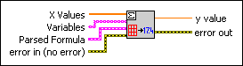

Eval Parsed Formula String VI
Owning Palette: 1D & 2D Evaluation VIs
Requires: Full Development System
Takes the output of the Parse Formula String VI and fixes input values to calculate function values.

 Add to the block diagram Add to the block diagram |
 Find on the palette Find on the palette |